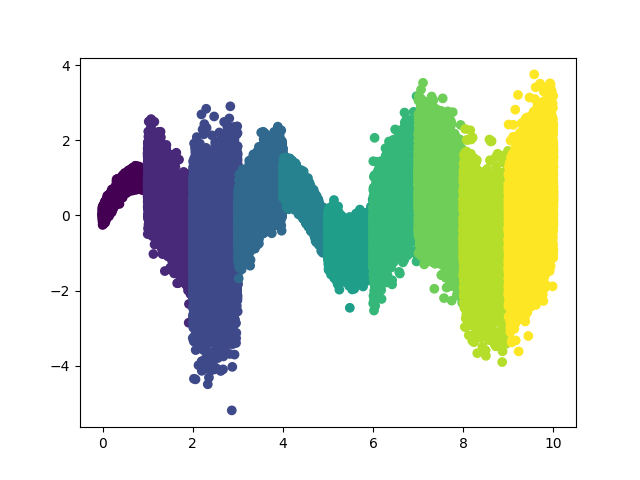
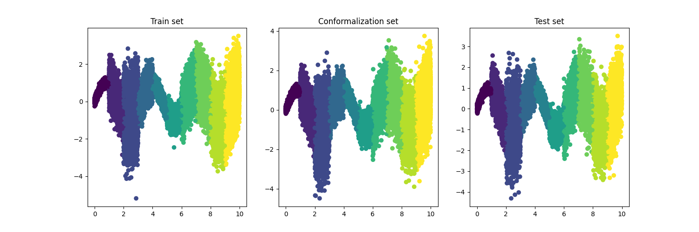
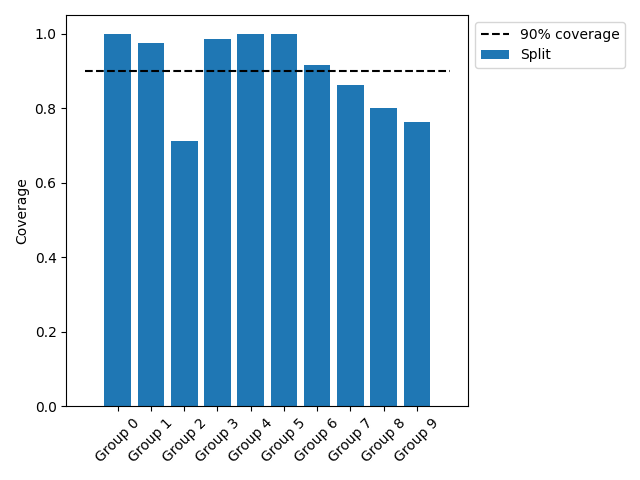
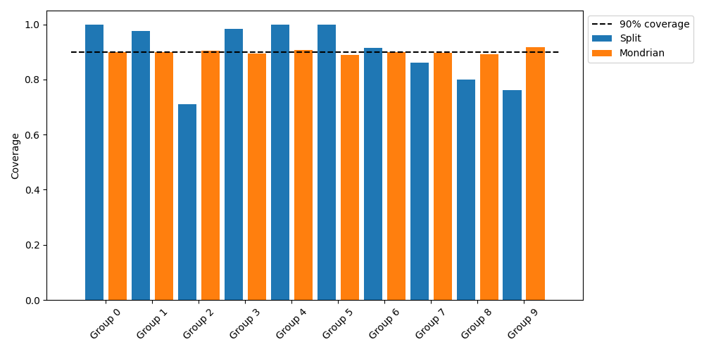

Note
Click here to download the full example code
Tutorial: how to ensure fairness across groups with Mondrian¶
Mondrian is a method that allows to build prediction sets (for classification) and prediction intervals (for regression) with a group-conditional coverage guarantee. To achieve this, it runs a conformal prediction procedure for each of these groups, and hence achieves marginal coverage on each of them.
In this tutorial, we compare the prediction intervals estimated by MAPIE on a simple,
one-dimensional, ground truth function with classical conformal prediction intervals
versus Mondrian conformal prediction intervals. The function is a sinusoidal function
with added noise, and the data is split in 10 disjoint groups. Such groups can
include categories like gender or demographic segments, such as different age ranges.
Ultimately, the goal is to estimate the prediction intervals for new data points and
compare the coverage of these intervals across groups.
Please note that the coverage obtained with Mondrian depends on the size of the groups: therefore, the groups must be large enough for the coverage to represent the model's performance on each of them accurately. If the groups are too small (e.g., fewer than 200 samples within the group's conformalization set), the conformalization may become unstable, likely resulting in high variance in the effective coverage obtained.
Throughout this tutorial, we will answer the following questions:
- How to use MAPIE to estimate prediction intervals for a regression problem?
- How to build Mondrian conformal prediction intervals using MAPIE for regression?
- How to compare the coverage of the prediction intervals by groups?
Here, SplitConformalRegressor is used, along with the
"absolute" conformity score.
The Mondrian method is compatible with any MAPIE estimator, except those involving cross-conformal predictions. There are no restrictions on the conformity scores used.
import os
import warnings
from copy import copy
import matplotlib.pyplot as plt
import numpy as np
from sklearn.ensemble import RandomForestRegressor
from mapie.metrics.regression import regression_coverage_score
from mapie.regression import SplitConformalRegressor
from mapie.utils import train_conformalize_test_split
os.environ["TF_CPP_MIN_LOG_LEVEL"] = "3"
warnings.filterwarnings("ignore")
1. Create the noisy dataset¶
We create a dataset with 10 groups, each of those groups having a different level of noise.
n_points = 100000
np.random.seed(0)
X = np.linspace(0, 10, n_points).reshape(-1, 1)
group_size = n_points // 10
partition_list = []
for i in range(10):
partition_list.append(np.array([i] * group_size))
# The `partition` array contains the group of each of the 100,000 data points. We
# ensured that the groups are disjoint.
partition = np.concatenate(partition_list)
noise_0_1 = np.random.normal(0, 0.1, group_size)
noise_1_2 = np.random.normal(0, 0.5, group_size)
noise_2_3 = np.random.normal(0, 1, group_size)
noise_3_4 = np.random.normal(0, 0.4, group_size)
noise_4_5 = np.random.normal(0, 0.2, group_size)
noise_5_6 = np.random.normal(0, 0.3, group_size)
noise_6_7 = np.random.normal(0, 0.6, group_size)
noise_7_8 = np.random.normal(0, 0.7, group_size)
noise_8_9 = np.random.normal(0, 0.8, group_size)
noise_9_10 = np.random.normal(0, 0.9, group_size)
y = np.concatenate(
[
np.sin(X[partition == 0, 0] * 2) + noise_0_1,
np.sin(X[partition == 1, 0] * 2) + noise_1_2,
np.sin(X[partition == 2, 0] * 2) + noise_2_3,
np.sin(X[partition == 3, 0] * 2) + noise_3_4,
np.sin(X[partition == 4, 0] * 2) + noise_4_5,
np.sin(X[partition == 5, 0] * 2) + noise_5_6,
np.sin(X[partition == 6, 0] * 2) + noise_6_7,
np.sin(X[partition == 7, 0] * 2) + noise_7_8,
np.sin(X[partition == 8, 0] * 2) + noise_8_9,
np.sin(X[partition == 9, 0] * 2) + noise_9_10,
],
axis=0,
)
We plot the dataset with the partition as colors.

2. Split the dataset into a training set, a conformalization set, and a test set¶
(X_train, X_conformalize, X_test, y_train, y_conformalize, y_test) = (
train_conformalize_test_split(
X, y, train_size=0.4, conformalize_size=0.4, test_size=0.2, random_state=0
)
)
(partition_train, partition_conformalize, partition_test, _, _, _) = (
train_conformalize_test_split(
partition,
y,
train_size=0.4,
conformalize_size=0.4,
test_size=0.2,
random_state=0,
)
)
We plot the training set, the conformalization set, and the test set.
f, ax = plt.subplots(1, 3, figsize=(15, 5))
ax[0].scatter(X_train, y_train, c=partition_train)
ax[0].set_title("Train set")
ax[1].scatter(X_conformalize, y_conformalize, c=partition_conformalize)
ax[1].set_title("Conformalization set")
ax[2].scatter(X_test, y_test, c=partition_test)
ax[2].set_title("Test set")
plt.show()

3. Fit a random forest regressor on the training set¶
4. Build the classical conformal prediction intervals¶
In this first part, let us build the prediction intervals with MAPIE using a single
SplitConformalRegressor.
Conformalize a SplitConformalRegressor on the conformalization set
# We aim for a coverage score of at least 90%.
split_regressor = SplitConformalRegressor(
random_forest, prefit=True, confidence_level=0.9
)
split_regressor.conformalize(X_conformalize, y_conformalize)
Out:
Predict the prediction intervals on the test set
Evaluate the coverage score by group
coverages = {}
for group in np.unique(partition_test):
coverages[group] = {}
coverages[group]["split"] = regression_coverage_score(
y_test[partition_test == group],
y_prediction_intervals_split[partition_test == group],
)
# Plot the coverage by group with the SplitConformalRegressor
plt.bar(
np.arange(len(coverages)),
[coverages[group]["split"].item() for group in coverages],
label="Split",
)
plt.xticks(
np.arange(len(coverages)), [f"Group {group}" for group in coverages], rotation=45
)
plt.hlines(0.9, -1, 10, label="90% coverage", color="black", linestyle="--")
plt.ylabel("Coverage")
plt.legend(loc="upper left", bbox_to_anchor=(1, 1))
plt.tight_layout()
plt.show()
# Compute the coverage average across the 10 groups in the test set
split_coverages = [coverages[group]["split"] for group in coverages]
average_coverage = np.mean(split_coverages)
print("Average coverage across the 10 groups:", average_coverage)

Out:
As shown in the graph above, the average coverage across the 10 groups (i.e., marginal coverage) is above the target coverage (90%), which was expected. However, the coverage varies greatly from one group to another; this behavior is not desirable, as we want to achieve 90% coverage in each group (i.e., conditional coverage).
Let us see how Mondrian allows us to handle this situation.
5. Build the Mondrian conformal prediction intervals¶
In this part, we will let us build the prediction intervals using the Mondrian method.
Conformalize a SplitConformalRegressor on the conformalization set for each group
For each group in the conformalization set, we conformalize a distinct
SplitConformalRegressor.
mondrian_regressor = {}
partition_groups_conformity = np.unique(partition_conformalize)
for group in partition_groups_conformity:
mapie_group_estimator = SplitConformalRegressor(
copy(random_forest), prefit=True, confidence_level=0.9
)
indices_groups = np.argwhere(partition_conformalize == group)[:, 0]
X_group = X_conformalize[indices_groups]
y_group = y_conformalize[indices_groups]
mapie_group_estimator.conformalize(X_group, y_group)
mondrian_regressor[group] = mapie_group_estimator
Predict the prediction intervals on the test set
Next, for each group in the test set, we build the prediction intervals using the
SplitConformalRegressor associated with the group.
partition_groups_test = np.unique(partition_test)
y_pred_mondrian = np.empty((len(X_test),))
y_prediction_intervals_mondrian = np.empty((len(X_test), 2, 1))
for _, group in enumerate(partition_groups_test):
indices_groups = np.argwhere(partition_test == group)[:, 0]
X_group = X_test[indices_groups]
y_pred_group, y_prediction_intervals_group = mondrian_regressor[
group
].predict_interval(X_group)
y_pred_mondrian[indices_groups] = y_pred_group
y_prediction_intervals_mondrian[indices_groups] = y_prediction_intervals_group
6. Compare the coverage by partition, plot both methods side by side¶
Finally, we can compare the coverage scores for each group using both methods.
coverages = {}
for group in np.unique(partition_test):
coverages[group] = {}
coverages[group]["split"] = regression_coverage_score(
y_test[partition_test == group],
y_prediction_intervals_split[partition_test == group],
)
coverages[group]["mondrian"] = regression_coverage_score(
y_test[partition_test == group],
y_prediction_intervals_mondrian[partition_test == group],
)
# Plot the coverage by group, plot both methods side by side
plt.figure(figsize=(10, 5))
plt.bar(
np.arange(len(coverages)) * 2,
[coverages[group]["split"].item() for group in coverages],
label="Split",
)
plt.bar(
np.arange(len(coverages)) * 2 + 1,
[coverages[group]["mondrian"].item() for group in coverages],
label="Mondrian",
)
plt.xticks(
np.arange(len(coverages)) * 2 + 0.5,
[f"Group {group}" for group in coverages],
rotation=45,
)
plt.hlines(0.9, -1, 20, label="90% coverage", color="black", linestyle="--")
plt.ylabel("Coverage")
plt.legend(loc="upper left", bbox_to_anchor=(1, 1))
plt.tight_layout()
plt.show()
# Compute the coverage average across the 10 groups in the test set with the classic
# method
split_coverages = [coverages[group]["split"] for group in coverages]
average_coverage = np.mean(split_coverages)
print(
"Average coverage across the 10 groups with the classic method:", average_coverage
)
# Compute the coverage average across the 10 groups in the test set with the Mondrian
# method
split_coverages = [coverages[group]["mondrian"] for group in coverages]
average_coverage = np.mean(split_coverages)
print(
"Average coverage across the 10 groups with the Mondrian method:", average_coverage
)

Out:
Average coverage across the 10 groups with the classic method: 0.9007750922701531
Average coverage across the 10 groups with the Mondrian method: 0.9000044379819128
As expected, both methods achieve an average coverage (marginal coverage) above 90% across the 10 groups. However, the Mondrian method provides coverage for each group (conditional coverage) that is much closer to the target coverage compared to the classic method.
Total running time of the script: ( 0 minutes 11.072 seconds)
Download Python source code: plot_main-tutorial-mondrian-regression.py
Download Jupyter notebook: plot_main-tutorial-mondrian-regression.ipynb